Programación en el servidor:
aspectos avanzados

¿Por qué un modelo asíncrono?
Node está pensado para desarrollar aplicaciones con alta capacidad de respuesta como, por ejemplo, servidores web.
La funcionalidad de la mayoría de aplicaciones web está basada en accesos a disco u otra fuente de datos (p.ej. bases de datos), que son operaciones relativamente lentas.
Para que un servidor web pueda atender a varios clientes, ha de gestionar adecuadamente estas operaciones de entrada y salida.
Modelos de servidores web
- Modelo tradicional: un proceso por petición.
- Modelo tradicional: pool de hebras de ejecución.
- NGINX Process Model (Node).
Un proceso por petición
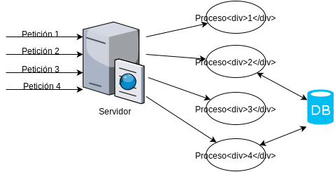Se crea un proceso del sistema operativo por cada petición que se realice.
Inconveniente: coste de la creación de procesos.
Pool de hebras de ejecución
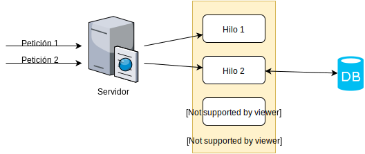Al arrancar el servidor se crea un conjunto de hebras, inicialmente sin tarea asignada.
Cuando llega una petición al servidor, una de las hebras se encarga de atenderla.
Con esto nos ahorramos el coste de creación y liberación de hebras a medida que van llegando peticiones.
Inconveniente: el cambio del contexto de ejecución entre hebras conlleva un coste.
Modelo NGINX / Node
Existe un único hilo en ejecución
Este hilo se encarga de atender a todas las peticiones.
Cuando se requiere realizar una operación con coste elevado en tiempo (acceso a disco, BD, red, etc.), se realiza de manera asíncrona. La función callback se guarda en una cola de funciones que se ejecutarán cuando finalice el código que se está ejecutando actualmente.
Esta cola es gestionada por Node, no por el SO.
⇒ El cambio de contexto es menos costoso.
Bucle principal de un servidor Node
while (!terminado) {
1. Esperar petición de un cliente.
2. Procesar petición.
}
¿Cómo se procesa la petición?
Si sólo se utilizan operaciones síncronas, el servidor no acepta otra petición hasta que la hayan terminado dichas operaciones:
while (!terminado) {
1. Esperar petición de un cliente.
2. Procesar petición:
2.1 let resultado = consultarBDSync(...);
2.2 Procesar resultado
2.3 Devolver resultado al cliente.
}
Por el contrario, si se realizan operaciones asíncronas, será la función callback la que procese y devuelva el resultado de la operación. Antes de ejecutar la función callback, la iteración actual del bucle continúa su ejecución.
while (!terminado) {
1. Esperar petición de un cliente.
2. Procesar petición:
2.1 let resultado = consultarBDASync(..., callback);
}
function callback(resultado) {
1. Procesar resultado
2. Devolver resultado al servidor
}
Nada más lanzar la operación consultarDBAsync, el servidor está listo para atender otra petición.
Consecuencias de este modelo
En el contexto de un servidor web con Node, todas las operaciones de E/S deben ser asíncronas, para evitar cuellos de botella en el procesamiento de las peticiones.
Esto es especialmente relevante cuando se quiere realizar operaciones costosas en términos de tiempo de CPU.
while (!terminado) {
1. Esperar petición de un cliente.
2. Procesar petición (alto coste CPU). Cuello de botella
3. Devolver respuesta.
}
Si se desea realizar una operación de este tipo, el cómputo complejo deberá dividirse en cómputos más sencillos, y ejecutar cada uno de ellos en una iteración del bucle de node, de manera que se intercalen con el procesamiento de las demás peticiones al servidor.
Esto se puede realizar con la función process.nextTick()
Más información
Más sobre módulos
- Los módulos admiten sentencias.
- El objeto
module. - Los módulos se «cachean».
- Aplicaciones del sistema de paquetes.
- Versionado semántico.
Los módulos admiten sentencias
Además de declaraciones de funciones, un módulo puede contener cualquier tipo de sentencia. Estas sentencias serán ejecutadas al cargar el módulo.
console.log("Cargando módulo " + module.filename);
function areaCuadrado(lado) { ... }
function areaCirculo(radio) { ... }
function perimetroCuadrado(lado) { ... }
function perimetroCirculo(radio) { ... }
module.exports = {
areaCuadrado: areaCuadrado,
areaCirculo: areaCirculo,
perimetroCuadrado: perimetroCuadrado,
perimetroCirculo: perimetroCirculo
}
El objeto module
Contiene información sobre el módulo que se está ejecutando actualmente [+]
La variable especial require.main contiene el nombre del módulo que se ha cargado desde el intéprete de línea de comandos.
Esto nos permite saber si un módulo está siendo ejecutado directamente por Node, o si está siendo importado desde otro módulo.
Ejemplo: moduloFib.js
// ...
function fib(n) {
// ...
}
module.exports = fib;
if (require.main === module) {
console.log("Sucesión de Fibonacci");
for (let i = 0; i < 10; i++) {
console.log(`fib(i) = ${fib(i)}`);
}
}
Al ejecutarlo desde la línea de comandos:
# node moduloFib.js
Sucesión de Fibonacci
fib(i) = 0
fib(i) = 1
fib(i) = 1
fib(i) = 2
fib(i) = 3
fib(i) = 5
fib(i) = 8
fib(i) = 13
fib(i) = 21
fib(i) = 34
Al importarlo desde otro módulo:
let fib = require("./moduloFib"); // No imprime nada
Los módulos se «cachean»
Cuando un módulo se importa varias veces mediante require a lo largo de la ejecución de un programa, el módulo cargado solo se ejecuta la primera vez.
Las siguientes veces require no vuelve a ejecutar el módulo. Se limita a devolver el module.exports que se devolvió la primera vez que se cargó.
En el ejemplo geometria.js:
let g1 = require("./geometria");
// Imprime: "Cargando módulo geometría.js"
...
let g2 = require("./geometria");
// No se imprime nada, porque el módulo ha sido cargado
¡Cuidado con las variables globales en el módulo!
// bd.js
// -----
let bd = {
"50382322X" : { nombre: "Francisco Martín",
fecha: new Date(1978, 04, 04) },
"46854322V" : { nombre: "Estela Lucas",
fecha: new Date(1979, 03, 15) }
};
function obtenerPersona(dni) { return bd[dni]; }
function numeroPersonas() {
return Object.getOwnPropertyNames(bd).length;
}
function añadirPersona(dni, nomb, fechaNac) {
bd[dni] = { nombre: nomb, fecha: fechaNac };
}
module.exports = {
obtenerPersona: obtenerPersona,
numeroPersonas: numeroPersonas,
añadirPersona: añadirPersona
};
// En un punto del programa:
let bd1 = require("./bd");
bd1.añadirPersona("11111111V", "Fátima", new Date());
console.log(bd1.numeroPersonas()); // → 3
// ...
// En otro punto del programa:
let bd2 = require("./bd");
console.log(bd2.numeroPersonas()); // → 3
Tanto bd1 como bd2 hacen referencia a la misma base de datos, ya que al hacer require por segunda vez se reutiliza el mismo módulo que se cargó la primera vez.
Aplicaciones del sistema de paquetes
Recordemos el proceso de búsqueda de módulos:
require("foo");
Se busca foo.js o un directorio llamado foo en los siguientes directorios:
node_modules/../node_modules/../../node_modules/../../../node_modules/- etc.
¿Por qué Node busca los paquetes de esta forma?
Caso de uso 1
Compartición de paquetes entre proyectos:
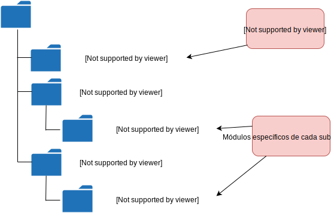Caso de uso 2
Convivencia de distintas versiones de un mismo paquete:
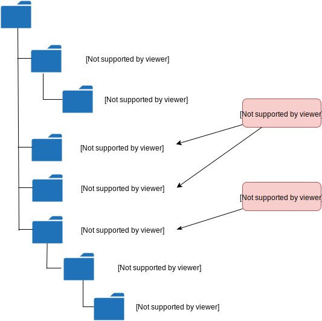Números de versión
Los paquetes y programas escritos en Node utilizan el convenio semantic versioning para numerar las versiones.
Más información: http://semver.org/
Una versión se identifica mediante tres números:
Al liberar una nueva versión:
- MAJOR: Se aumenta si los cambios introducidos rompen la compatibilidad con versiones anteriores.
- MINOR: Se aumenta si los cambios introducidos no rompen la compatibilidad con versiones anteriores, pero añaden nueva funcionalidad.
- PATCH: Se aumenta si no hay funcionalidad nueva, pero sí correcciones de bugs.
Excepción: versiones 0.x.x, cuya API es inestable.
Rangos de versión en package.json
¿Qué significa el símbolo ^ en el número de versión?
{
...
"dependencies": {
"underscore": "^1.8.3",
"express": "^4.14.0"
},
"private": true
}
En el caso de underscore significa que se admite otra versión distinta de la especificada, siempre que preserve la compatibilidad de la API (es decir, versiones 1.x.x).
Lo mismo se aplica a express.
Posibles especificaciones:
1.8.3La versión debe ser exactamente la especificada.>=1.8.3Se admite cualquier versión mayor o igual.<=1.8.3Se admite cualquier versión menor o igual.~1.8.3Se admiten versiones 1.8.x.^1.8.3Se admiten versiones 1.x.x.*Se admite cualquier versión.1.8.3 - 2.5.1Rango permitido.
Funciones y módulos adicionales
- Temporizadores:
setTimeout,setInterval. - La variable global
process. - Módulos core:
os. - Paquetes útiles: Underscore.js, Moment.js.
Temporizadores
setTimeout(fun, time)
Ejecuta la función fun transcurrida una cantidad de milisegundos dada.
La función se ejecuta de manera asíncrona.
setTimeout(() => {
console.log("Han pasado 5 segundos");
}, 5000);
console.log("Esto se ejecuta antes");
Esto se ejecuta antes
Han pasado 5 segundos
Similarmente: setInterval, clearInterval, que ejecutan una función periódicamente.
let contador = 1;
// El objeto devuelto por setInterval nos sirve
// para detener el temporizador cuando el contador llegue a 5
let interval = setInterval(() => {
console.log(`Ejecutándose por ${contador}ª vez`);
if (contador === 5) {
clearInterval(interval);
}
contador++;
}, 1000);
Más información https://nodejs.org/docs/v4.6.1/api/timers.html
La variable process
Atributos relacionados con la ejecución del programa:
process.exit(code)
Finaliza la ejecución del programa.process.argv
Array con los argumentos de la línea de comandos.process.cwd()/process.chdir(dir)
Obtiene o cambia el directorio actual.-
process.platform,process.version,process.archInformación sobre el sistema operativo, versión de Node, etc.
Ejemplo
// Los dos primeros elementos de process.argv son el
// nombre del ejecutable de Node, y el nombre del script
let args = process.argv;
let suma;
if (args.length === 4) {
suma = Number(args[2]) + Number(args[3]);
} else {
suma = "No definida";
}
console.log(`Suma: ${suma}`);
console.log(`Sistema operativo: ${process.platform}`);
console.log(`Versión de node: ${process.version}`);
console.log(`Arquitectura: ${process.arch}`);
# node process.js 5 6
Suma: 11
Sistema operativo: linux
Versión de node: v4.6.1
Arquitectura: x64
Módulo os
Contiene utilidades relacionadas con el sistema operativo. Entre ellas:
homedir()
Devuelve el path del directorio de usuario.tmpdir()
Devuelve el path de un directorio para crear ficheros temporales.
let os = require("os");
console.log(os.homedir()); // → /home/manuel
console.log(os.tmpdir()); // → /tmp
Paquetes Node adicionales
Los siguientes paquetes no forman parte de la distribución de Node y, por tanto, han de ser instalados en un proyecto utilizando la herramienta npm.
-
Underscore.js (http://underscorejs.org/)
Proporciona operaciones útiles sobre arrays y objetos.npm install underscore --save -
Moment.js (http://momentjs.com/)
Permite manejar fechas. Más potente que la claseDate.npm install moment --save
Underscore.js
Cajón de sastre con un centenar de funciones de utilidad sobre arrays y objetos.
Algunas ya conocidas (Hoja de ejercicios 3):
pluck(arrayDeObjetos, fieldName)partition(arrayDeObjetos, p)groupBy(arrayDeObjetos, f)where(arrayDeObjetos, modelo)
Por convenio, la variable que contiene el módulo underscore suele llamarse _ (guión bajo).
let _ = require("underscore");
Algunas otras funciones:
shuffle(array): desordena un array aleatoriamente._.shuffle([1, 2, 3, 4, 5, 6, 7]) // → [1, 6, 4, 2, 7, 3, 5]sample(array, n): tomanelementos de un array aleatoriamente._.sample([1, 2, 3, 4, 5, 6, 7], 3) // → [6, 4, 3]
- Operaciones conjuntistas:
_.union([1, 5, 6], [1, 7, 5]) // → [1, 5, 6, 7] _.intersection([1, 5, 6], [1, 7, 5]) // → [1, 5] _.difference([1, 5, 6], [1, 7, 5]) // → [6] -
Eliminación de duplicados en un array (
uniq)_.uniq([1, 5, 1, 7, 8, 5]) // → [1, 5, 7, 8]
-
findIndex(array, p): Devuelve el índice del primer elementoxdearraytal quep(x)devuelvetrue._.findIndex(["Berta", "Beatriz", "Fabio"], n => n.startsWith("F")); // → 2 -
range(ini, fin[, step]): Devuelve una lista ascendente desdeinihastafin(excluido)._.range(1, 5) // → [1, 2, 3, 4]
escape(cadena),unescape(cadena): Sustituye los caracteres <, >, ", etc de una cadena por sus correspondientes entidades HTML, y viceversa.
_.escape("Esto es <b>importante</b>")
// → Esto es <b>importante</b>
Moment.js
Funciones de manejo de fechas.
Se basa en una clase Moment que actúa como envoltorio de la clase Date
let moment = require("moment");
let hoy = moment();
let comienzoCurso = moment(new Date(2016, 8, 26));
Puede formatear una fecha a partir de una región.
let moment = require("moment");
moment.locale('es');
let hoy = moment();
let comienzoCurso = moment(new Date(2016, 8, 26));
console.log(comienzoCurso.format("MMM D"));
// → "sep. 26"
console.log(comienzoCurso.format("LLL"));
// → 26 de septiembre de 2016 0:00
Formatear fechas en relación a la actual:
console.log(comienzoCurso.fromNow());
// → hace un mes
Operaciones sobre fechas:
let f1 = moment();
let f2 = moment(new Date(1983, 7, 28));
console.log(f1.diff(f2, 'years')); // → 33
Eventos y flujos
Son abstraciones de alto nivel aplicables en distintos contextos: ficheros, sockets, eventos del SO, etc.
Manejo de eventos
La librería events permite manejar generadores y suscriptores de eventos.
Los objetos de la clase EventEmitter representan generadores de eventos.
let events = require("events");
let emisor = new events.EventEmitter();
Cada tipo de evento se identifica con una cadena de texto y puede llevar asociados varios parámetros.
El método on registra una función callback que será llamada cuando se produzca un evento dado.
emisor.on("incrementado", valorNuevo => {
console.log(`Se ha incrementado el contador: ${valorNuevo}`);
});
El emisor emite sus eventos mediante la función emit.
Al emitir un evento, el emisor llamará a todas las funciones que se hayan suscrito al mismo.
emisor.emit("incrementado", 14);
Se ha incrementado el contador: 14
Normalmente no se utiliza la clase EventEmitter directamente; son otras clases las que heredan de ella.
/*
* Clase Contador
*/
class Contador extends events.EventEmitter {
constructor() {
this.valor = 0;
}
incrementar() {
this.valor++;
this.emit("incrementado", this.valor);
}
}
Un emisor de eventos puede tener múltiples suscriptores. Al emitir el evento, los suscriptores son llamados en el orden en el que suscribieron.
let c = new Contador();
c.on("incrementado", val => {
console.log(`Suscriptor 1: ${val}`);
});
c.on("incrementado", val => {
console.log(`Suscriptor 2: ${val}`);
});
c.incrementar();
c.incrementar();
Suscriptor 1: 1
Suscriptor 2: 1
Suscriptor 1: 2
Suscriptor 2: 2
Eventos emitidos por process
La variable process extiende a EventEmitter.
Eventos lanzados:
-
"exit". Emitido al finalizar el programa.process.on("exit", exitCode => { // Liberar ficheros, volcar logs, // cerrar conexiones a BDs, etc. }); "uncaughtException". Emitido cuando se lanza una excepción que no es capturada por el programa.
Eventos emitidos por el módulo fs
- Eventos relacionados con streams.
Se explicará a continuación lo que es un stream. - Eventos relacionados con el sistema de ficheros.
Ver: funciónfs.watch().
Streams
Surgen como respuesta al problema de procesamiento de recursos de gran tamaño.
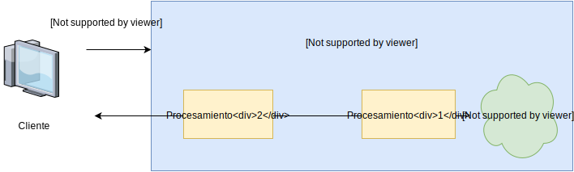Durante todo este tiempo el cliente no recibe respuesta.
Solamente la recibe cuando el procesamiento 2 termina.
Segmentando el recurso podemos enviar la respuesta al cliente a medida que se procesa.
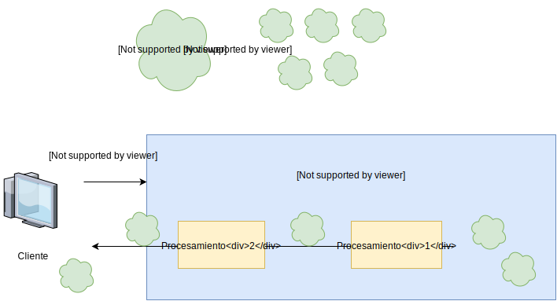Un flujo (stream) es una corriente de datos, de la que se puede extraer y/o enviar información.
Los flujos, además de permitir la segmentación, facilitan el uso de las funciones relativas a ficheros, pues permiten cambiar las llamadas asíncronas por funciones de captura de eventos.
El módulo core stream define varias clases relacionadas con flujos de datos.
Existen cuatro tipos de flujos:
- Flujos de lectura
Ej: ficheros de entrada.
- Flujos de escritura
Ej: ficheros de salida.
- Flujos dúplex
Ej: sockets.
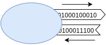 - Flujos transformadores
Ej: compresores, codificadores.
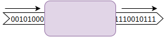
Todos los flujos heredan de la clase Stream.
Flujos y ficheros
El módulo fs permite obtener flujos Readable y Writable a partir de ficheros.
let fs = require("fs");
let flujoEntrada = fs.createReadStream("Poema.txt");
Inicialmente el flujo está en estado de pausa. No emite ninguna información hasta que se haga explícitamente con el método read().
Cuando un flujo en pausa tiene información disponible para ser extraida, emite el evento readable.
flujoEntrada.on("readable", () => {
// Llamar a flujoEntrada.read() para obtener
// la información.
});
Si el fichero es grande, se emitirán sucesivamente varios eventos readable con cada uno de sus «fragmentos».
Cada llamada a read() obtiene uno de esos fragmentos.
Cuando ya no quedan más fragmentos por leer, el flujo vuelve a emitir el evento readable para avisarnos, pero esta vez la función read() devolverá null.
Ejemplo
let flujoEntrada = fs.createReadStream("Fichero_grande.pdf");
flujoEntrada.on("readable", () => {
let fragmento = flujoEntrada.read();
if (fragmento !== null) {
console.log(`Leído fragmento de ${fragmento.length} bytes`);
} else {
console.log("Ya no hay más fragmentos");
}
});
Leído fragmento de 65536 bytes
Leído fragmento de 65536 bytes
Leído fragmento de 65536 bytes
Leído fragmento de 65536 bytes
Leído fragmento de 65536 bytes
Leído fragmento de 65536 bytes
Leído fragmento de 65536 bytes
Leído fragmento de 65536 bytes
Leído fragmento de 45245 bytes
Ya no hay más fragmentos
Para crear un flujo de salida hacia un fichero, se utiliza createWriteStream, que devuelve un Writable.
Los objetos Writable tienen, entre otros, los siguientes métodos:
write(), para enviar información al flujo.end(), para enviar información al flujo, e indicar que ya no se va a enviar más información.
Ejemplo
let flujoSalida = fs.createWriteStream("NuevoFichero.txt",
{encoding: "utf-8"});
for (let i = 0; i < 10; i++) {
flujoSalida.write(i + "\n");
}
flujoSalida.end("Fin!\n");
Encadenamiento de flujos
El método pipe() vuelca el contenido de un flujo a otro.
flujoEntrada.pipe(flujoSalida);
Ejemplo: copia de un fichero
const fs = require("fs");
let flujoEntrada = fs.createReadStream("Poema.txt");
let flujoSalida = fs.createWriteStream("PoemaCopia.txt");
flujoEntrada.pipe(flujoSalida);
El módulo zlib
Trabaja con distintos formatos de compresión de ficheros.
En particular, tiene un métodos createGzip() y createGunzip(). Cada uno de ellos crea un flujo transformador que comprime (o descomprime, respectivamente) la entrada.
Ejemplo: compresión de un fichero
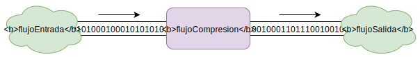
const fs = require("fs");
const zlib = require("zlib");
let flujoEntrada = fs.createReadStream("thymeleaf.pdf");
let flujoCompresion = zlib.createGzip();
let flujoSalida = fs.createWriteStream("thymeleaf.pdf.gz");
flujoEntrada.pipe(flujoCompresion);
flujoCompresion.pipe(flujoSalida);
Subida de ficheros
- Codificación de formularios.
- El middleware
multer. - Adjuntar ficheros a un formulario.
Codificación de formularios
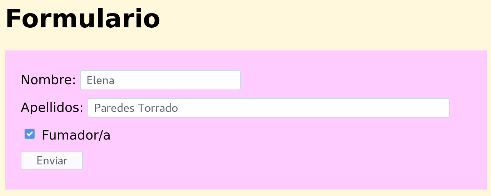
<form method="POST" action="procesar_formulario.html">
...
<input type="text" name="nombre">
...
<input type="text" name="apellidos" style="width:30em">
...
<input type="checkbox" name="fumador" value="si">
...
<input type="submit" value="Enviar">
</form>
Al hacer clic en el botón Enviar se adjunta la información del formulario dentro del cuerpo de la petición POST:
POST http://localhost:3000/procesar_formulario.html HTTP/1.1
Host: localhost:3000
User-Agent: Mozilla/5.0 (X11; Fedora; Linux x86_64; rv:50.0)
Accept: text/html,application/xhtml+xml,application/xml;q=0.9,*/*
Accept-Language: en-US,en;q=0.7,de;q=0.3
Accept-Encoding: gzip, deflate
Referer: http://localhost:3000/
Connection: keep-alive
Upgrade-Insecure-Requests: 1
Content-Type: application/x-www-form-urlencoded Codificación
Content-Length: 49
nombre=Elena&apellidos=Paredes+Torrado&fumador=si Contenido
Por defecto, los datos del formulario se envían con la codificación application/x-www-form-urlencoded, en la que los datos del formulario aparecen exactamente de la misma manera en la que aparecerían en la URL de una petición GET.
El middleware body-parser puede extraer los datos de un formulario con esta codificación:
app.use(bodyParser.urlencoded({ extended: false }));
Este middleware descodifica la información del formulario y la guarda en request.body.
app.post("/procesar_formulario.html", (request, response) => {
response.render("datos_formulario", {
nombre: request.body.nombre,
apellidos: request.body.apellidos,
fumador: request.body.fumador === "si"
});
});
La codificación mediante URL de los datos de un formulario es bastante limitada si el formulario permite introducir grandes cantidades de texto o adjuntar ficheros en formato binario (p.ej. imágenes).
Existe otro tipo de codificación más adecuada para formularios complejos: multipart/form-data.
La codificación con la que el cliente envía los datos del formulario se indica en la etiqueta <form>:
<form method="POST" action="procesar_formulario.html"
enctype="multipart/form-data">
...
</form>
Esta vez, al hacer clic en el botón Enviar el navegador envía la siguiente petición:
POST http://localhost:3000/procesar_formulario.html HTTP/1.1
Host: localhost:3000
User-Agent: Mozilla/5.0 (X11; Fedora; Linux x86_64; rv:50.0)
...
Content-Type: multipart/form-data; boundary=------------
Content-Length: 425
------------
Content-Disposition: form-data; name="nombre"
Elena
------------
Content-Disposition: form-data; name="apellidos"
Paredes Torrado
------------
Content-Disposition: form-data; name="fumador"
si
--------------
El middleware multer
El middleware body-parser no puede analizar formularios enviados con la codificación multipart/form-data.
Existe otro middleware destinado a ello: multer
npm install multer --save
const multer = require("multer");
El módulo multer exporta una única función. Esta función devuelve una factoría de middlewares.
const multerFactory = multer();
Esta factoría contiene métodos que devuelven middlewares:
none(): Procesa formularios que no adjuntan ningún fichero.single(): Procesa formularios que adjuntan un fichero.array(): Procesa formularios que adjuntan varios ficheros.
Dado que nuestro formulario aún no tiene ningún campo para subir ficheros, utilizamos none().
El middleware puede añadirse a la cadena global:
app.use(multerFactory.none());
Pero es más frecuente su uso como middleware intermedio exclusivamente en aquellas rutas que hagan uso de este tipo de formularios:
app.post("/procesar_formulario.html",
multerFactory.none(), (request, response) => {
...
});
Al igual que body-parser, el middleware multer analiza el contenido del formulario y añade los atributos correspondientes al objeto request.body.
app.post("/procesar_formulario.html",
multerFactory.none(), (request, response) => {
response.render("datos_formulario", {
nombre: request.body.nombre,
apellidos: request.body.apellidos,
fumador: request.body.fumador === "si"
});
});
Adjuntar ficheros a un formulario
Hemos visto los siguientes tipos de componentes <input>
submitresettext, password, number, range, ...radiocheckboxhidden
Veremos otro tipo nuevo: file
<form method="POST" action="procesar_formulario.html"
enctype="multipart/form-data">
...
<input type="file" name="foto">
...
</form>
Al enviar el formulario se genera la siguiente petición:
POST http://localhost:3000/procesar_formulario.html HTTP/1.1
Host: localhost:3000
User-Agent: Mozilla/5.0 (X11; Fedora; Linux x86_64; rv:50.0)
...
Content-Type: multipart/form-data; boundary=------------
Content-Length: 14411
------------
Content-Disposition: form-data; name="nombre"
Elena
------------
Content-Disposition: form-data; name="apellidos"
Paredes Torrado
------------
Content-Disposition: form-data; name="fumador"
si
------------
Content-Disposition: form-data; name="foto"; filename="profile-icon-png-917.png"
Content-Type: image/png
...datos del fichero PNG....
--------------
Pasamos al código Javascript en el servidor.
En primer lugar, a la hora de crear la factoría de middlewares, hemos de indicar dónde almacenar los ficheros subidos:
- En memoria:
let multer = require("multer"); multerFactory = multer({ storage: multer.memoryStorage() }); - En una carpeta determinada en el servidor:
let multer = require("multer"); multerFactory = multer({ dest: path.join(__dirname, "uploads") });
Utilizaremos esta última opción en nuestro ejemplo.
Como el formulario incluye un único componente para subir archivos, debemos utilizar el método single() de la factoria de middlewares creada por multer.
Este método recibe el nombre del campo del formulario que contiene el fichero adjunto.
app.post("/procesar_formulario.html",
upload.single("foto"), (request, response) => {
...
});
El middleware devuelto por single() añade un nuevo atributo file al objeto request. El atributo file es un objeto con los siguientes atributos:
-
mimetype,size
Tipo MIME y tamaño del fichero subido. -
destination,filename
La carpeta y nombre del fichero donde se ha guardado el fichero subido en el servidor. -
path
La ruta completa del fichero subido dentro del servidor. -
buffer
Contenido del fichero (solamente disponible si se ha utilizado almacenamiento en memoria).
En nuestro ejemplo:
app.post("/procesar_formulario.html",
upload.single("foto"), (request, response) => {
if (request.file) { // Si se ha subido un fichero
console.log(`Fichero guardado en: ${request.file.path}`);
console.log(`Tamaño: ${request.file.size}`);
console.log(`Tipo de fichero: ${request.file.mimetype}`);
}
response.render("datos_formulario", {
nombre: request.body.nombre,
apellidos: request.body.apellidos,
fumador: request.body.fumador === "si"
});
});
Fichero guardado en: uploads/85a78144eb402de50883c6be1204b200
Tamaño: 13819
Tipo de fichero: image/png
Modificamos la función para que añada el nombre del fichero subido a la carpeta uploads dentro de la vista (en el caso en que se haya subido alguno):
app.post("/procesar_formulario.html",
upload.single("foto"), (request, response) => {
let nombreFichero = null;
if (request.file) {
nombreFichero = request.file.filename;
}
response.render("datos_formulario", {
nombre: request.body.nombre,
apellidos: request.body.apellidos,
fumador: request.body.fumador === "si",
imagen: nombreFichero
});
});
Dentro de la vista datos_formulario:
...
<% if (imagen) { %>
<tr>
<td>Foto:</td>
<td><img src="/imagen/<%= ficheroImagen %>"></td>
</tr>
<% } %>
...
Para mostrar la imagen, el navegador hará una petición GET a la dirección /imagen/identificador, donde el identificador es el nombre de la imagen dentro de la carpeta uploads.
Para tratar las URLs de la forma /imagen/identificador tenemos que añadir un nuevo manejador de ruta paramétrica a la aplicación:
app.get("/imagen/:id", (request, response) => {
...
});
Este manejador devolverá la imagen correspondiente al servidor:
let pathImg = path.join(__dirname, "uploads", request.params.id);
response.sendFile(pathImg);
Binarios y bases de datos
Las imágenes pueden ser guardadas en la base de datos como celdas de tipo BLOB.
Supongamos que queremos almacenar los resultados del formulario anterior en una base de datos.
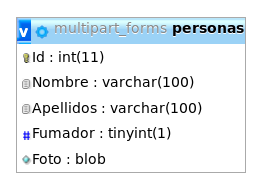El primer paso es configurar multer para que los ficheros adjuntos al formulario se almacenen en memoria:
const multer = require("multer");
...
const upload = multer({ storage: multer.memoryStorage() });
Al utilizar almacenamiento en memoria, el contenido del fichero está disponible dentro de la propiedad buffer como un objeto de la clase Buffer.
Actualizamos el controlador de /procesar_formulario.html
app.post("/procesar_formulario.html", upload.single("foto"),
(request, response) => {
let usuario = {
nombre: request.body.nombre,
apellidos: request.body.apellidos,
fumador: request.body.fumador === "si",
foto: null
};
if (request.file) {
usuario.foto = request.file.buffer;
}
insertarUsuario(usuario, (err, newId) => {
usuario.id = newId;
response.render("datos_formulario_bd", usuario);
});
});
La función insertarUsuario utiliza una consulta paramétrica para añadir la correspondiente fila en la BD.
let pool = mysql.createPool(...);
...
function insertarUsuario(usuario, callback) {
pool.getConnection((err, con) => {
if (err) {
callback(err);
} else {
let sql =
"INSERT INTO personas(Nombre, Apellidos, Fumador, Foto) " +
"VALUES (?, ?, ?, ?)";
con.query(sql, [usuario.nombre, usuario.apellidos,
usuario.fumador, usuario.foto], Objeto Buffer
(err, result) => {
con.release();
if (err) {
callback(err);
} else {
callback(null, result.insertId);
}
});
}
});
}
¿Cómo obtener las imágenes de la BD?
Añadimos una ruta /imagen/:id que devuelve al cliente la foto correspondiente al usuario con el id dado.
app.get("/imagen/:id", (request, response) => {
let n = Number(request.params.id);
if (isNaN(n)) {
response.status(400);
response.end("Petición incorrecta");
} else {
obtenerImagen(n, (err, imagen) => {
if (imagen) {
response.end(imagen); Devolvemos buffer al cliente
} else {
response.status(404);
response.end("Not found");
}
});
}
});
La función obtenerImagen obtiene la foto de la BD:
function obtenerImagen(id, callback) {
pool.getConnection((err, con) => {
if (err) {
callback(err);
} else {
let sql = "SELECT Foto FROM personas WHERE Id = ?";
con.query(sql, [id], (err, result) => {
con.release();
if (err) {
callback(err);
} else {
// Comprobamos si existe una persona
// con el Id dado.
if (result.length === 0) {
callback(null, undefined);
} else {
callback(null, result[0].Foto);
}
}
});
}
});
}
Una vez que el usuario ha enviado el formulario, y se ha insertado la información correspondiente en la BD, se visualiza la vista datos_formulario_bd.
Esta vista utiliza una URL de la forma /imagen/:id para mostrar la imagen del usuario:
...
<% if (foto) { %>
<tr>
<td>Foto:</td>
<td><img src="/imagen/<%= id %>"></td>
</tr>
<% } %>
...
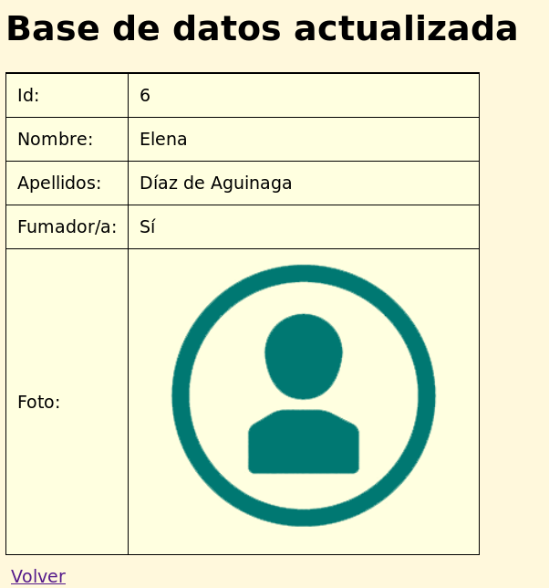
Validación de formularios
Un problema recurrente en las aplicaciones web es la comprobación de que los datos introducidos por los usuarios en un formulario son correctos.
El módulo express-validator facilita esta comprobación.
https://github.com/ctavan/express-validator
La comprobación realizada mediante este módulo se realiza en el lado del servidor.
El módulo express-validator
npm install express-validator --save
El módulo exporta una única función que devuelve un middleware:
const expressValidator = require("express-validator");
const app = express();
...
app.use(expressValidator());
...
Este middleware añade métodos extra al objeto request. Estos métodos permiten validar la información de un formulario.
Métodos añadidos al objeto request
checkQuery()
Especifica condiciones en los parámetros de la URL (formularios conmethod="GET").checkBody()
Especifica condiciones en el cuerpo de la petición (formularios conmethod="POST").checkParam()
Especifica condiciones en las componentes de las URL paramétricas (por ejemplo,/user/:id/profile).check()
Especifica condiciones en cualquiera de las tres anteriores.
Estos métodos reciben uno o dos parámetros:
check(nombreParam[, mensaje])
donde nombreParam es el nombre del componente del formulario (o parámetro de la URL) que se quiere analizar, y mensaje es el mensaje de error que se debería mostrar al usuario en el caso en que las condiciones impuestas no se cumplan.
Estos métodos devuelven un objeto cuyos métodos permiten concretar qué condiciones ha de cumplir la información correspondiente.
Ejemplo
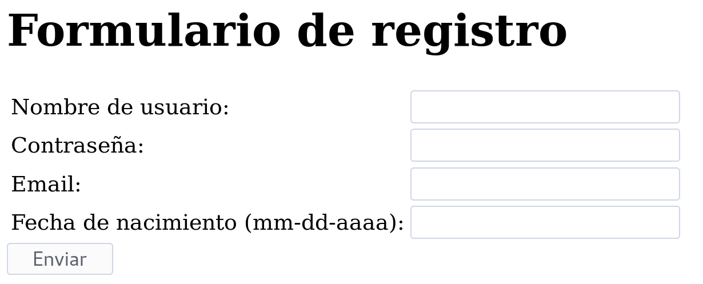
<form method="post" action="procesar_formulario">
<input type="text" name="login">
...
<input type="password" name="pass">
...
<input type="text" name="email">
...
<input type="text" name="fechaNacimiento">
</form>
app.post("/procesar_formulario", (request, response) => {
// El campo login ha de ser no vacío.
request.checkBody("login",
"Nombre de usuario vacío").notEmpty();
// El campo login solo puede contener caracteres alfanuméricos.
request.checkBody("login",
"Nombre de usuario no válido").matches(/^[A-Z0-9]*$/i);
// El campo pass ha de tener entre 6 y 10 caracteres.
request.checkBody("pass",
"La contraseña no es válida").isLength({ min: 6, max: 10 });
// El campo email ha de ser una dirección de correo válida.
request.checkBody("email",
"Dirección de correo no válida").isEmail();
// El campo fechaNacimiento ha de contener una fecha en formato
// mm/dd/aaaa anterior a la fecha actual.
request.checkBody("fechaNacimiento",
"Fecha de nacimiento no válida").isBefore();
...
}
Métodos de comprobación
isAlpha(locale)isAlphanumeric(locale)isAscii(locale)isBefore([date])contains(str)isDate()isDecimal()isFloat()
isHexColor()isIP()isIn([v1, v2, ...])isNumeric()matches(regexp)isURL()isLength({min: .., max: ..})- etc.
Lista completa: https://github.com/chriso/validator.js
Métodos de comprobación personalizados
Se pasa un objeto con una propiedad customValidators a la función que crea el middleware.
app.use(expressValidator({
customValidators: {
// El siguiente validador determina si un campo comienza
// por la letra 'a'
empiezaPorA: param => {
return param.startsWith("a");
}
}
}));
...
request.checkBody("login",
"Nombre de usuario no empieza por a").empiezaPorA();
...
Una vez ejecutados los métodos check(), puede comprobarse la existencia de fallos mediante:
request.getValidationResult().then(callback);
donde la función callback recibe un objeto que permite obtener los errores de validación detectados.
request.getValidationResult().then(result => {
// El método isEmpty() devuelve true si las comprobaciones
// no han detectado ningún error
if (result.isEmpty()) {
response.redirect("/correcto.html");
} else {
// manejar caso de error
}
});
En caso de que el método isEmpty() devuelva false, existen dos métodos para obtener los errores producidos:
result.array()result.mapped()
El método result.array()
Devuelve un array con tantos objetos como errores producidos. Cada objeto contiene el nombre del elemento del formulario (name), el mensaje de error (msg) y el valor introducido por el usuario (value):
[
{ param: 'email',
msg: 'Dirección de correo no válida',
value: 'correo' },
{ param: 'fechaNacimiento',
msg: 'Fecha de nacimiento no válida',
value: '40/23/2004' }
]
Este método resulta útil para mostrar al usuario todos los errores juntos en una misma zona de la web:
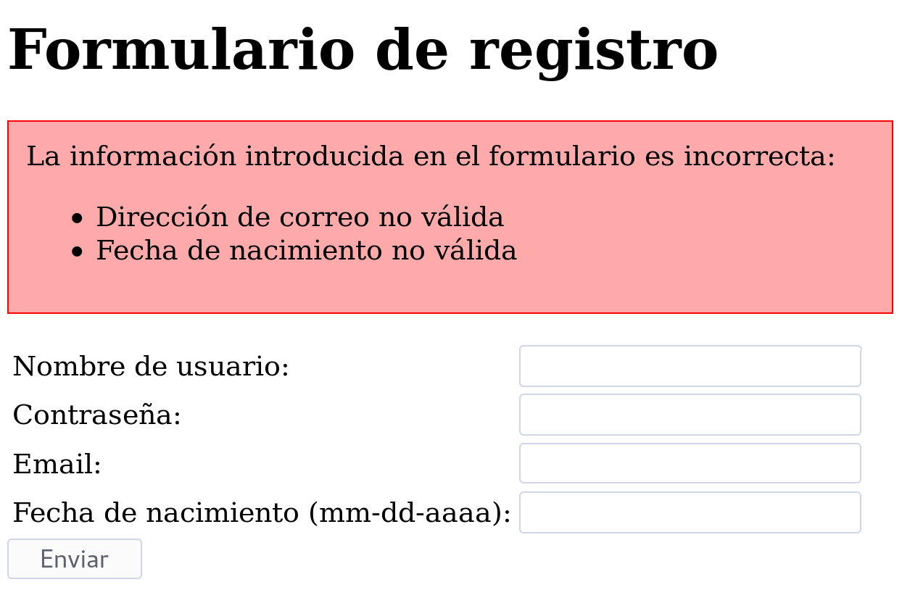
request.getValidationResult().then(result => {
// El método isEmpty() devuelve true si las comprobaciones
// no han detectado ningún error
if (result.isEmpty()) {
response.redirect("/correcto.html");
} else {
response.render("index", {errores: result.array() });
}
});
views/index.ejs
<h1>Formulario de registro</h1>
<div class="caja_errores">
La información introducida en el formulario es incorrecta:
<ul>
<% errores.forEach(error => { %>
<li><%= error.msg %></li>
<% }); %>
</ul>
</div>
<form method="post" action="procesar_formulario">
...
El método result.mapped()
Devuelve un objeto cuyas claves son los nombres de campos del formulario en los que se ha producido error:
{
email: {
param: 'email',
msg: 'Dirección de correo no válida',
value: 'correo'
},
fechaNacimiento: {
param: 'fechaNacimiento',
msg: 'Fecha de nacimiento no válida',
value: '40/23/2004'
}
} Sirve para separar los mensajes de error en distintas zonas de la página web:
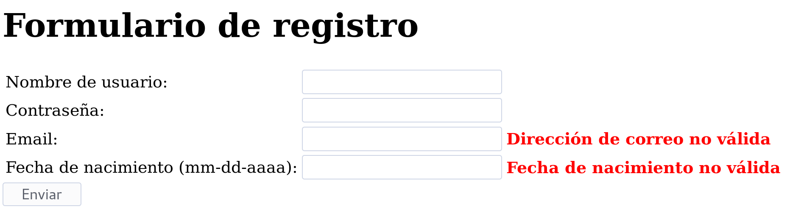
request.getValidationResult().then(result => {
// El método isEmpty() devuelve true si las comprobaciones
// no han detectado ningún error
if (result.isEmpty()) {
response.redirect("/correcto.html");
} else {
response.render("index", {errores: result.mapped() });
}
});
views/index.ejs
<input type="text" name="email">
<% if (errores.email) { %>
<span class="rojo"><%= errores.email.msg %></span>
<% } %>
...
<input type="text" name="fechaNacimiento">
<% if (errores.fechaNacimiento) { %>
<span class="rojo"><%= errores.fechaNacimiento.msg %></span>
<% } %>
Bibliografía
- B.A. Syed
Beginning Node.js
Apress, 2014 - Documentación de las librerías de Node https://nodejs.org/docs/v4.6.1/api/

Documentación librerías externas
- Multer:
https://github.com/expressjs/multer - Express validator:
https://github.com/ctavan/express-validator - Underscore.js:
http://underscorejs.org/ - Moment.js:
http://momentjs.com/